２００６三都物語〜京都・大阪・神戸〜。３/２５・２６・２７
さて、タケユキです。
今回の想い出を書く前に軽く登場人物紹介を。
******************************************************************
・さんま・・高校時代の同級生。顔がさんまに似てるため「さんま」。京都在住。
・おっさん・・高校時代の同級生。神奈川在住、帰省のついでに各地を観光中。
・三丁目・・高校時代の同級生。広島在住、帰省の度におじゃまする。ややヘタレ。
******************************************************************
主な登場人物はこの２人と１人。
おっさんが神奈川から帰省する途中で京都のさんま宅を
拠点に観光するって話を聞いて合流することに。
２５日、バイト終わった後にバイクでさんま宅へ。
おっさんはもうすでにさんまの家に到着してるらしい。
年末以来の再会に少しテンションが上がり気味、アクセルを吹かす。
もうそろそろ暖かくなってきたとはいえ夜はやっぱり寒い。
大阪から京都までってのは車・バイクだとけっこうかかって約８０分。
０時過ぎ、さんま宅前に到着、来るのはおよそ１年ぶり(たぶん)。
けっこうな長旅だったんで手とか顔とか寒くてブルブル、
さぁ部屋に入って感動の再会してさっさとこたつに入ろうか、
階段あがりながらふと気付く、
・・・さんまの部屋番号って何番だ？
あるよね、これってみんなけっこう経験あるよね、
行ったことのある友達の家に久し振りに行くことになりました、一人で。
ちゃんとマンションの場所も見つけていざ玄関、
部屋番号が分からずケータイ取り出す「部屋何番だっけ？」
そうですよ、誰しもが一度は経験するパターンですよ、
というわけで俺もケータイ取り出すと、一通のメールが来てた。
-----------------------------------------
時間：２３：３４
ＦＲＯＭ：さんま
内容：あ、二人とも寝てたらすまん
-----------------------------------------
・ ・ ・ 超 イ ヤ な 予 感 。
まさかそんなことはないよなと自分を落ち着かせ、さんまに電話をする。
プルルルルルル、プルルル・・・・でない。
まぁいくらなんでもおっさんは起きてるだろう、おっさんに電話。
プルルルルルル、プルルル・・・・
おいおいおいおいおいおいおいおい。
どっちも出ねえじゃんけ。
大阪から京都までバイクで来てくれって言ったのはさんまなのに、
必死こいて走ってきて到着したらこの仕打ち、
もう帰ろうかと本気で思った。
でもここまで来たんで後には引けず、過去の記憶を掘り起こす。
確かけっこう階段を上がって４階くらいだったはず、
部屋は階段上がってから一番手前の部屋だったような気がする。
どうせ寝てるんだからピンポンは無用、いきなりドアノブに手をのばす。
ビンゴーーー！！！
ドアの向こうに寝てる男二人。
よかったあたったーー。てかなんでこんな時間に俺は一人ドキドキしとんねん。
とりあえず二人をたたき起こして軽く説教。
そしたらさんまが「大丈夫寝ると思ってちゃんと(部屋の)鍵開けて寝てたじゃん」
あまりの開き直りに怒る気なくして晩飯へ。
さんまが日本一のラーメンを食わしてやるっていうから
おっさんを後ろに乗せ、期待しながらバイクを走らせる。
１５分ほど走って到着、ついたラーメン屋の名前は「ラーメン日本一」。
なんねそういう意味かい。
でも日本一は店の名前だけかと思ってたけど実はそうではありませんでした、
ラーメンと餃子頼んで出てきたものは、
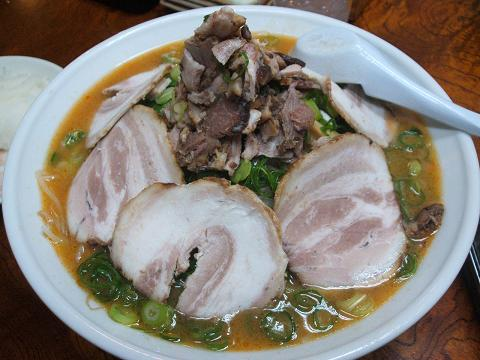ド根性ラーメン
分かる？これアホみたいにでっかいの分かる？
出てきた瞬間おいおい今から何人でこれ食うんかいっていうくらいでかい。
何？ラーメンの写真だけじゃ分からんって？
大きさが分かるようにケータイを横に置いて撮ったんだけど
いまいちインパクトがなかったのでそれは割愛します、次っ！
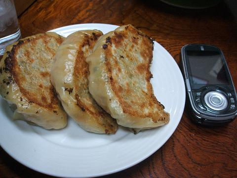ド根性餃子
これなら分かる？アホみたいにでかいっていうか、
おかしいじゃろ、ケータイよりでかいギョーザってなによ？
なぜか夜中の１時に大食い大会がスタート、
３人もくもくと食べる・・食べる・・
１０分後、挫折。
さすがに完食は無理だ。
ラーメンはいくらすくっても麺かとみせかけてもやしが出てきたり、
ド根性ギョーザは食ってる途中ギョーザがイモムシに見えてきて挫折。
まぁなんとかラーメンは具・麺だけ食って終了、
軽く吐きそうになりながら帰宅。
最近の話をいろいろしてたらおっさんがいつの間にかうとうと。
さんまと二人でまだ寝るのは早いと起こす。
５分後、おっさんまたうとうと。
起こす。
５分後・・以下繰り返し。
それからちょっとしてから俺もいつの間にか寝てました。
しかし久し振りだな、このメンツ。
２６日１０時過ぎ起床。
なぜか一番最後まで寝てたのもおっさん、よく寝るな。
１１時出発、今日は京都の寺巡り。
〜竜安寺〜
竜安寺と書いて「りょうあんじ」と読みます。
竜安寺は室町時代の末期の建築物で
枯山水の石庭として特に有名な文化物だそうです。
おっさんいわく竜安寺自体は有名じゃなくて石庭が有名なのだとか。
ちなみに今回の歴史建造物の解説は高校時代日本史専攻の
おっさんから教えてもらったことだけで話を進めます。
本人は浪人時代も含め４年も日本史を勉強した身、まかせろと豪語。
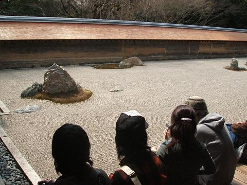竜安寺石庭１
石庭には全部で１５個の石が置かれていて、
どこから見てもすべての石を見ることができないという神秘的な庭園。
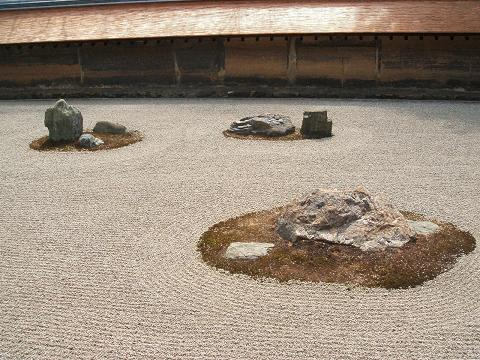竜安寺石庭２
この石の配置の意図などは不明でいろいろな説があるのだとか。
しばし眺めて次は京都観光といえばここ、金閣寺へ。
〜金閣寺〜
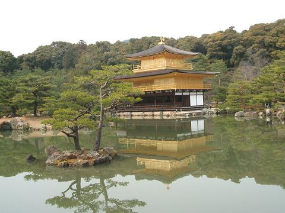鹿苑寺金閣
北山文化の代表建築物、鹿苑寺金閣。
将軍足利義満が立てた、一休さんによく出てくる。
・・おっさんはこれくらいしか説明してくれませんでした。
２年前に一度見に来たけどめっちゃ綺麗。
金閣寺の周りにバイクを止める場所がなかったので
ちょっと遠いところに路駐してたので一通り回って戻る。
時間も昼過ぎてたので昼飯を食べに「東龍」へ。
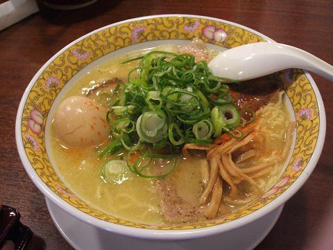東龍そば
ここのラーメンはうまい。
さんまが備え付けのニラが食べ放題(というか調味料とかと一緒に
備え付けてあるやつ)と言って食べまくる。
ニラを入れてた壷が空になるまで食す。
さんま、店員さんにニラおかわりを頼む。
そこまで食うか。
ニラがけっこう辛かったんで俺はニラはあまり食べず、ラーメンに入れず。
でもそのままでも十分楽しめた。
続いて南禅寺へ。
〜南禅寺〜
鎌倉時代の建造物で、このお寺には琵琶湖からの水をひいてた水路があります。
それもあってかきれいな水が売りなんだろう、
そこかしこに一瞬目を疑う看板が。
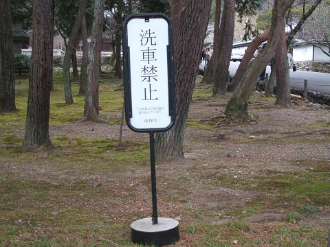
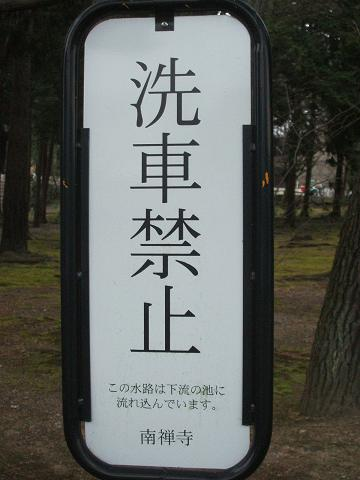
寺の中で洗車するやつがおるんかいな。
でも看板とか交差点とかにあるミラーってのはそこで事故があったから
事故後にとりつけられたって話も聞くしもしかしたらそんな人がいたのかも。
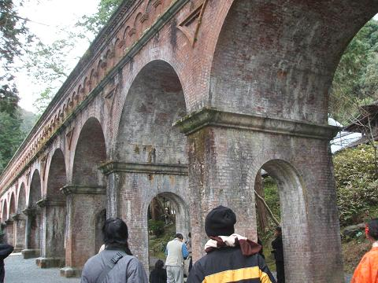水路閣
水路閣。
北海道の写真でもこんな感じの橋をどこかで見た気もするけど
京都にもアーチ型の水路があったみたい。
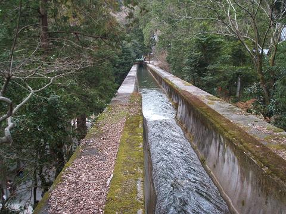水路閣
水路閣、上からの写真。
今も琵琶湖からの水が流れているそうで。
けっこう水の流れは速かった。
水路の上を歩いていくと線路跡に出た。
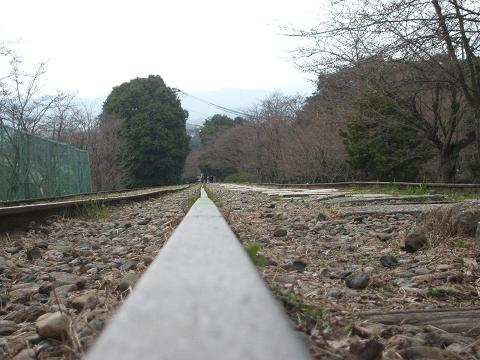
今は電車は通ってないけど昔は電車がそこそこ行き来してたとか。
線路の上を心行くまで歩く。
これって普段はめったに出来ないよね、というかしたら怒られるか。
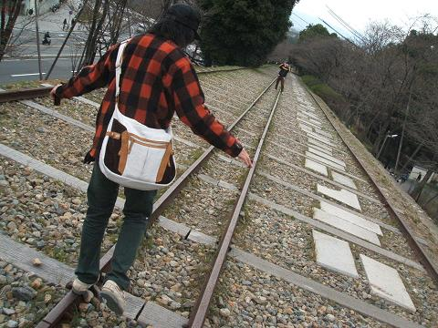
さて、線路を抜けて駐輪場へ戻り次に目指すは清水寺。
３月末から４月半ばまで清水寺はライトアップされるらしく
人が多くてかなり賑やかだった。
清水道(清水寺に続く道)にあるお店では
どこのお店でも八ツ橋とか京の漬物がたいてい試食できる。
それをいいことにここから食べ放題スタート、
八ツ橋(チョコバナナ、チョコレート、さくらあん、抹茶、黒ゴマ)を食べ、
漬物(きゅうり、ナス、カブ、大根、たくあん、高菜)を食べた、
というか食べまくった。
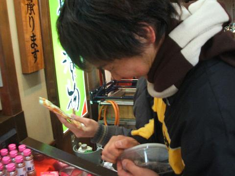
↑試食のタッパーを開けようとするも
なかなか開けられずに悪戦苦闘するさんまとそのタッパーの図。
いろいろ食べつつ梅昆布茶も試飲しつつ喉を潤す。
大阪よりも京都の方がある意味くいだおれの街。
変わった食べ物もけっこうあってその中で一際目立ったのが最中コロッケ。
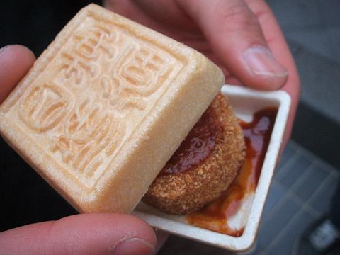最中コロッケ
説明は簡単、もなかの中にコロッケが入ってるんですね、はい。
味はどんなかっていうと揚げアイスを
イメージしてもらえるとそれでだいたいあたりかと。
試食でお腹いっぱいになったところで清水寺へ到着。
〜清水寺〜
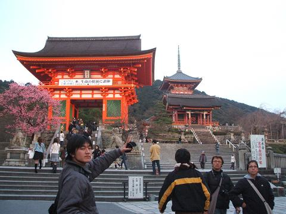清水寺
行く度に思うけどけっこうでかいのよね。
他のお寺といっしょでよし写真を撮ろうと想ってたら
門の前に向かい合ってる獅子が２頭。
たぶんここらへんからこの観光の方向性が変わり始めたんだと想う。
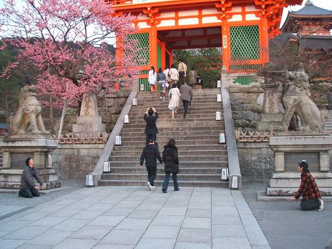清水寺の門
おっさんと二人で獅子の真似してみた。
もちろんカメラマンはさんま。
写真見たら分かるけどお互いの獅子の間ってけっこう距離あるのね、
でもここもけっこう撮影スポットなわけで。
さんまがカメラ構えてる時に横の高校生くらいの子に、
「あ、たぶん今通ったらダメだよ」
とか気を遣われてた。
この時午後５時半。
西の空が夕焼けに染まる刻。
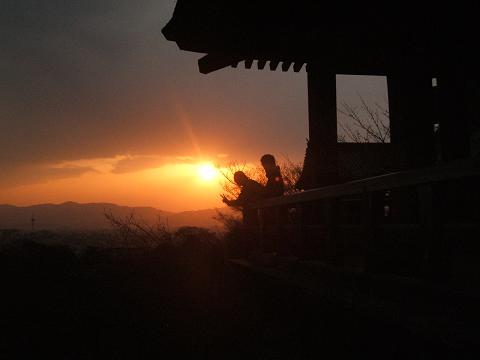
いい時間帯に来れたもんだ。
周りは家族連れ、カップル多し。
ロマンチックな雰囲気をかもし出す夕日。
上の夕焼けの写真もロマンチックでしょう？
逆光で愛し合う二人の顔がよく見えないけども。
まぁ写ってる二人はさんまとおっさんだから
見えないほうが逆にロマンチック。
カップルが多いって書いたけどほとんどのカップルは
手をつないで歩いたり、一緒に写真を撮ったり、くらい。
そりゃこんだけ人がいるとこでいちゃいちゃしねえのが常識だっての。
と思ってたらこんな常識はずれがいた。
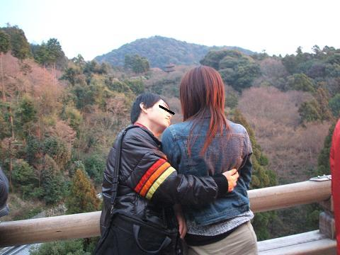
おいおいおい。
こんなとこで密着してんじゃねえよ。
明らかに男はチューしようとしてんじゃねえか。
俺はお前らのいちゃつく姿見に来たんじゃないっての、
きれいな景色、歴史建造物を見に来たの！
そのこんなとこがどんなとこかって言うと、
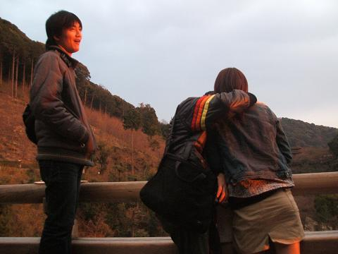
お っ さ ん の 真 横 。
俺だってこんな写真好きで撮ったんじゃない。
おっさんと風景をカメラに収めようとしたら無理矢理入ってきた、
俺は被害者だと声を高らかに叫びたかったんですよ、ほんとは。
やっとどこか行ってよし俺らも先に進もうと思った５分後、
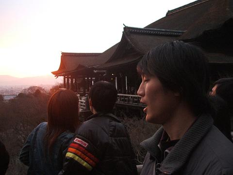
またいるし。
いやまぁほぼ一方通行だから仕方ないっちゃ仕方ないんだけど。
もうほっとこうということで先へ、
清水寺といえばここっていう３種類の水を汲む所へ到着。
人がけっこういたから時間短縮のため、
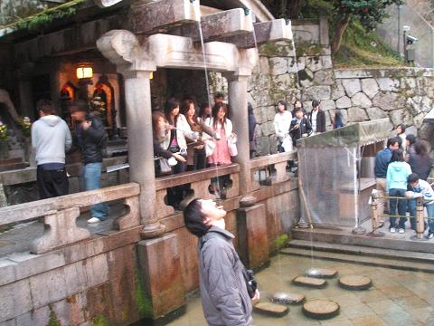水を直接飲むおっさん
直接飲む。
食後の一杯もすませ、清水寺を後にする。
もう夜もいい時間だったので晩ご飯を食べに四条の「串家」へ。
さぁ９０分の食べ放題スタート。
ここでさんまが串を持ってくる持ってくる。
開始５０分でまた軽く吐きそうになる。
ここからはゆっくり休憩しながらケーキなりの
少しわき道にそれた方向へ。
これでもかと食べてさんま宅へ帰宅。
一息ついて銭湯へ。
大きい銭湯ってなぜか水風呂あるよね。
何人かで銭湯入ったらなぜか誰が一番長く入ってられるか勝負するよね。
でも肩まで遣ってある程度経つと逆に暖かく思える自分がいるよね、
これって、けっこう命の危険？
あ、あと水風呂つかってて思ったんだけど
水風呂入ってる時ってなぜかつま先立ちになんね？
俺は入ってる間ずっと爪先立ちでプルプルしながらいてた。
結局水風呂は２，３分入っただけで後は普通のお湯で体をあっためましたとさ。
２７日、１０時起床。
今日はおっさんを大阪観光へ連れて行くってことで
バイクで一足先に大阪へ帰り、お昼に再度梅田で合流。
まずは定番のミナミ、道頓堀へ。
グリコ、カニ道楽、くいだおれ人形と３大定番を見た後にお好み焼きで昼食。
今日初めて知ったんだけどモダン焼きと広島風のお好み焼きって違うのな、
俺はずっと「モダン焼き＝広島風のお好み焼き」だと思ってた。
モダン焼きってのは上から生地、そば、生地で
広島風のお好み焼きは上から生地、キャベツ、そば、なんよね。
この年で１つ賢くなりました(遅すぎ？)。
お好み焼きを食べた後はアメ村へ。
またまた定番で今度はたこ焼きを三角公園で食べた。
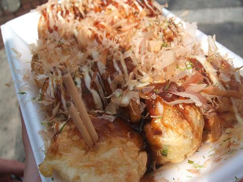甲賀流たこやき
たこ焼きを食べながら人間観察、
ここで俺とおっさんでは女の子の好きなタイプが違うことまで判明。
あ、これはまぁどうでもいいか。
たこ焼き食って満足したんで大阪城へ。
〜大阪城〜
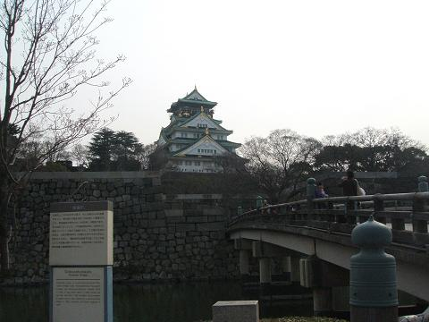
大阪城。
誰もが知る豊臣家の城。
この城は堀が外堀、内堀と二つあり、
かつ堀が反り返って作られてて外敵の侵入を阻むのだとか。
ちょうどこの日大阪城公園で植木市をやってたり
春の陽気らしく暖かく、桜もちらほら咲いていた。
梅田や難波のあたりとは違い、ここはゆっくり時間が流れているような気がして。
４月になってからもう一度来よう。
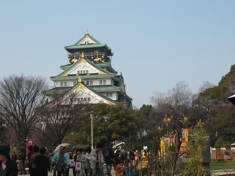
大阪城ってこの写真で見るとけっこう小さいよね。
ここを見てる人は「いやいや実際見るとでかいんだろ」って
思ったりもするんだろうけど、
いいえ、決してそんなことはありません。
大阪城は小さいです、どれくらい小さいかというと、
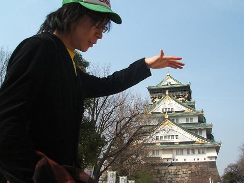
俺の身長よりも小さい。
ここに意外な新事実発覚(アホか)。
大阪城を出た後は男二人で神戸へ。
何が悲しくて男だけで神戸の海を見に行かねばならんか。
もうどうでもよくなって神戸のスイーツハーバーで男二人でスイーツを食べた。
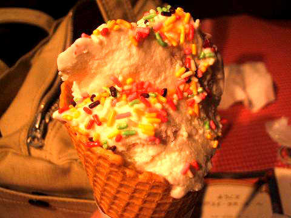マジックアイス
このマジックアイスはー３０℃の鉄板の上でアイスを練って作ってくれるアイス。
おいしいよ、かなりおすすめ。
アイスと一緒に少し心も冷たくなって海を目指して歩く。
ちょっとせつなくなってたら超偶然、
神戸のモザイクのあたりで三丁目の元カノに出遭う。
これはびっくりした、聞いてるか三丁目？
向こうからどこかで見たことあるような子が歩いてきて、
見てたら一度目が合ったから、いかんいかんって目をそらして、
でもやっぱり気になるから見たらまた目が合って、
そうこうしながらすれ違って、でも気になるから振り返って見てたら
あっちも振り返ってこっち見てた。立ち止まる。
どこかで見たんだよ、どこだろ。悩んでたらあっちから、
「タケユキ君・・よね？」
あー！声聞いて思い出した！三丁目の元カノじゃないか。
でも確かこの子は広島の大学に行ったはず・・なんで神戸で？
話を聞いたら友達と旅行に来てたのだとか。
しかし男二人で神戸を歩く姿を目撃されるとは思わなかった、なんか微妙にせつない。
ちょっと話してさよならして、もう切なくなったのはどうでもよくて
男二人で海を眺め、満足したので梅田に帰る。
晩ご飯は今回の観光でよく食べてるラーメン、今回は一風堂。
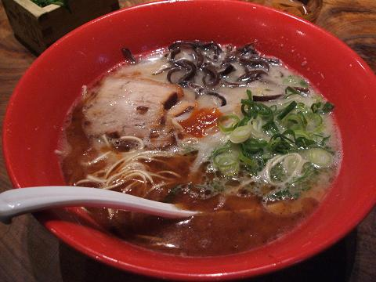赤丸新味
替え玉して満腹になって俺の家へ。
まぁせっかく大阪来たんやしあと１つきれいなとこ見せてやろうと
おっさんを乗せて伊丹空港の夜景を見に伊丹へ。
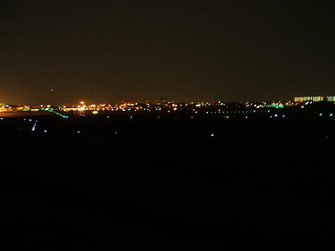
ここ最近なぜかこの夜景を男と見に来ることが多いんですが。
大阪来る人は今回の想い出に載せた案内、
空港の夜景鑑賞ツアーくらいはできるので
来る人はぜひ俺にメールを。
あ、別に男の人はメールしなくてもいいですよ。
今日の一枚：カラオケでガンダムを熱唱するおっさん。
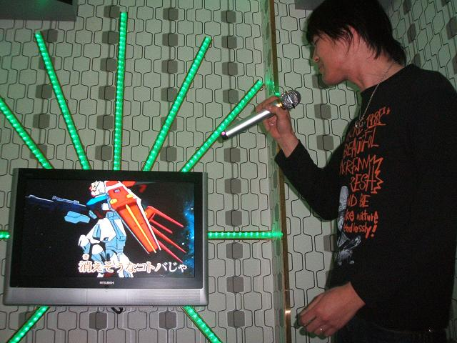
戻る